Префектура Хёго · остров Авадзи · отели
Отели «Хотэру Нью Авадзи»: онсэны над морем и закаты в сосновой роще на острове Авадзи
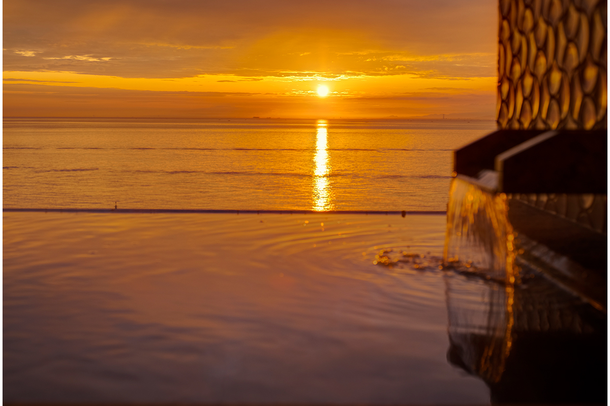
Остров Авадзи в префектуре Хёго когда-то оживал только летом, в сезон купания. Сегодня сюда едут круглый год, и многие едут ради отелей одной местной группы, которая выросла из маленькой гостиницы у порта и привыкла возвращать к жизни закрытые отели.
История
От гостиницы у парома до сети отелей
В 1953 году у порта Сумото, главного города Авадзи, открылась небольшая гостиница «Суйгэцусо». В ней ночевали пассажиры паромов, приходивших на остров. Из неё выросла «Хотэру Нью Авадзи», а потом и целая группа: к 2024 году у неё было 19 отелей и рёканов, в основном в регионе Кансай.
Поворотным для группы стал 1998 год. Тогда она взялась за закрытый отель на безлюдной горе на юге острова, и многие в успех не верили. Зато перед отелем открывался пролив Наруто, отделяющий Авадзи от острова Сикоку.
В обновлённом отеле стали подавать кайсэки, где кухня японского рёкана соединилась с европейскими приёмами: рыба и морепродукты из пролива, продукты с полей и ферм Авадзи, всё от местных производителей. В те годы так готовили ещё редко. Вдобавок построили открытую купальню на воде местного источника, из которой виден весь пролив. Отель получил имя «Хотэру Нью Авадзи Плаза Авадзисима», быстро стал популярным и остаётся таким уже много лет.
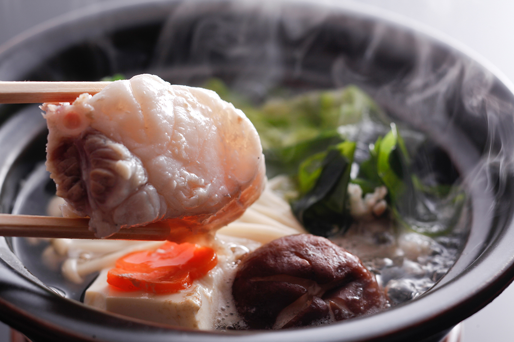
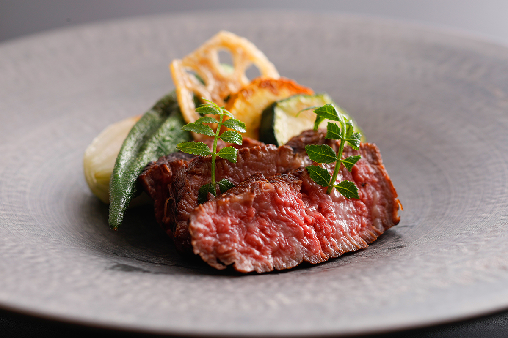
С тех пор почти все отели группы появлялись так же: это бывшие гостиницы, которые разорились или закрылись, и каждая получила собственную концепцию. Принцип у всех один: найти, чем сильно место, будь то вид, источник или местные продукты, и сделать это главным. В «Плаза Авадзисима» главным стал вид на пролив.
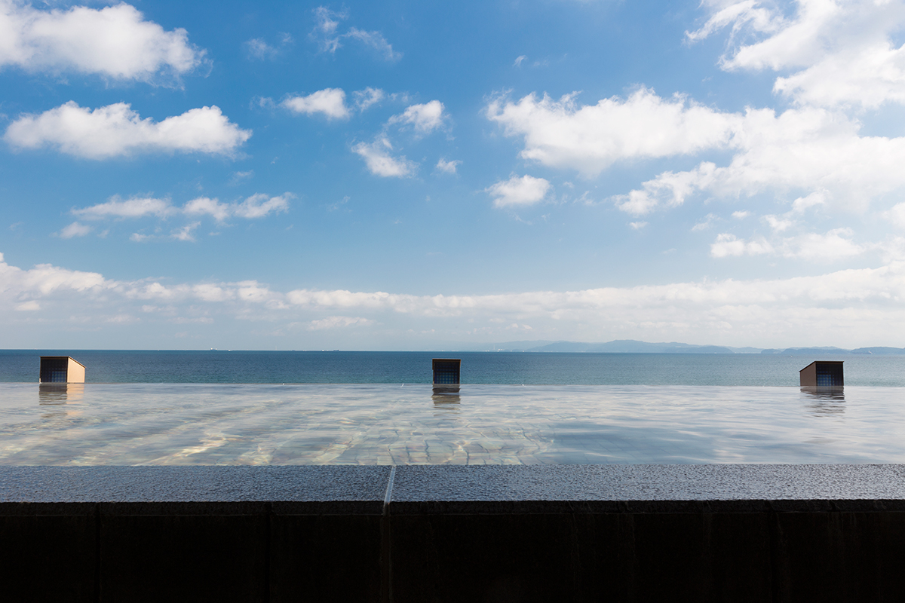
«Вилла Ракуэн»
Самая роскошная линия группы это «Вилла Ракуэн». В каждом номере есть своя открытая купальня с водой онсэна, площадь номеров доходит до 182 м², а перед глазами пролив Китан, отделяющий Авадзи от полуострова Кии. Спрос на отель высокий с самого открытия.
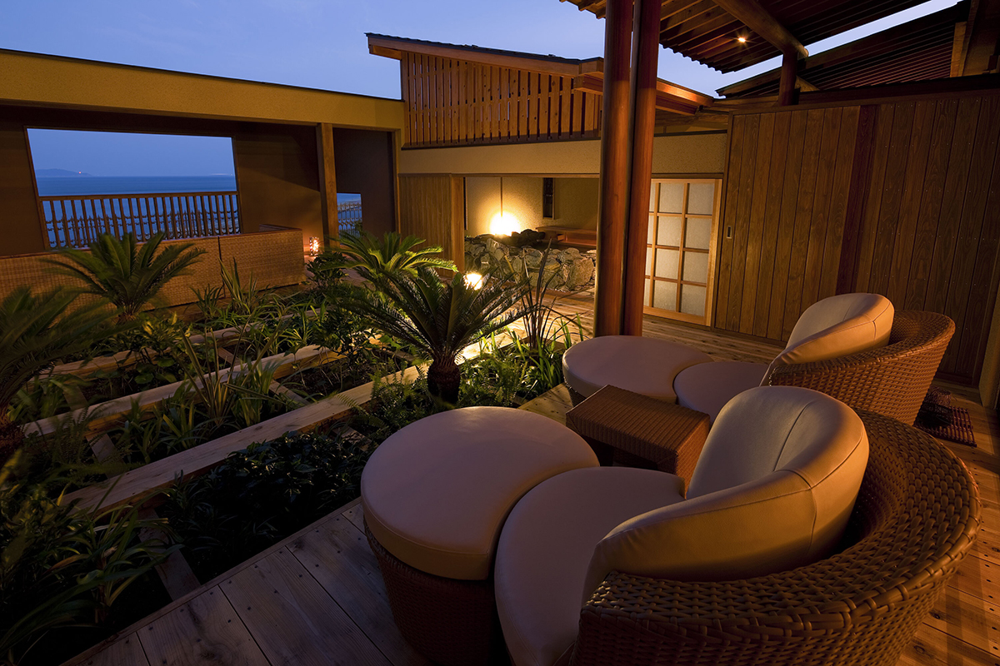
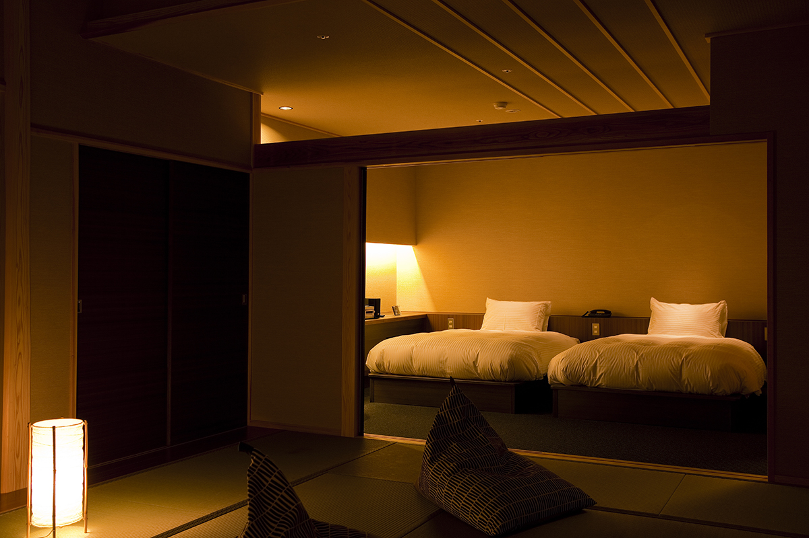
Остров
Одиннадцать отелей на одном острове
Авадзи родина группы и её главная база. Раньше приезжие появлялись здесь в основном летом, в сезон купания, и разница между высоким и низким сезоном была огромной. Сейчас туристы едут на остров весь год, и немалая часть из них едет именно ради здешних отелей.
На Авадзи у группы 11 отелей, среди них «Хотэру Нью Авадзи», «Авадзи Мусэнкэй» и «Авадзи Хама-рикю». Каждый построен вокруг того, чем богато его место, и рассчитан на свою публику: одни подходят для семейной поездки, другие для тихого отдыха вдвоём, так что отель легко выбрать под задачу. На кухнях много местных продуктов, и от этого выигрывают фермеры и рыбаки острова.
Восточный берег
«Авадзи Мусэнкэй»: рёкан, где море видно отовсюду
Полное название этого рёкана на восточном берегу Авадзи «Хотэру Нью Авадзи Бэттэй Авадзи Мусэнкэй», а его девиз звучит так: «Здесь то море, которое вы хотели увидеть». Главное в нём это банный корпус в два уровня с видом на спокойное море. Наверху купальня с переливным краем, где море, небо и горячая вода сливаются в одно. Внизу, у самой кромки прибоя, дикая открытая купальня на воде собственного источника.
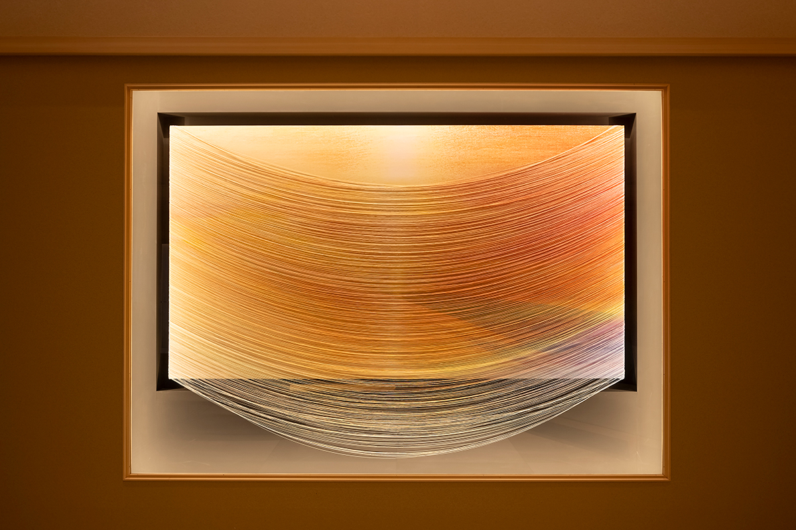
Это рёкан старой японской школы: ужин подают прямо в номер, а о гостях заботятся горничные, закреплённые за номерами. На особом этаже номера соединяют тёплую японскую обстановку с современным дизайном.
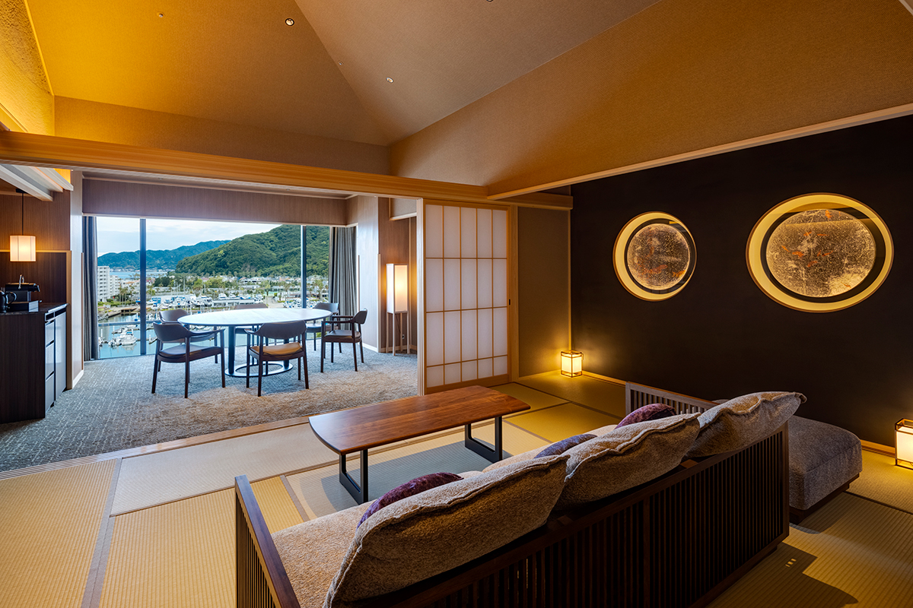
Ступенью выше стоит «Мусэнкэй Бэссо Амахара», задуманный как «вилла у моря». Здесь всё устроено ради уединения: можно жить по своему распорядку и не пересекаться с другими гостями.
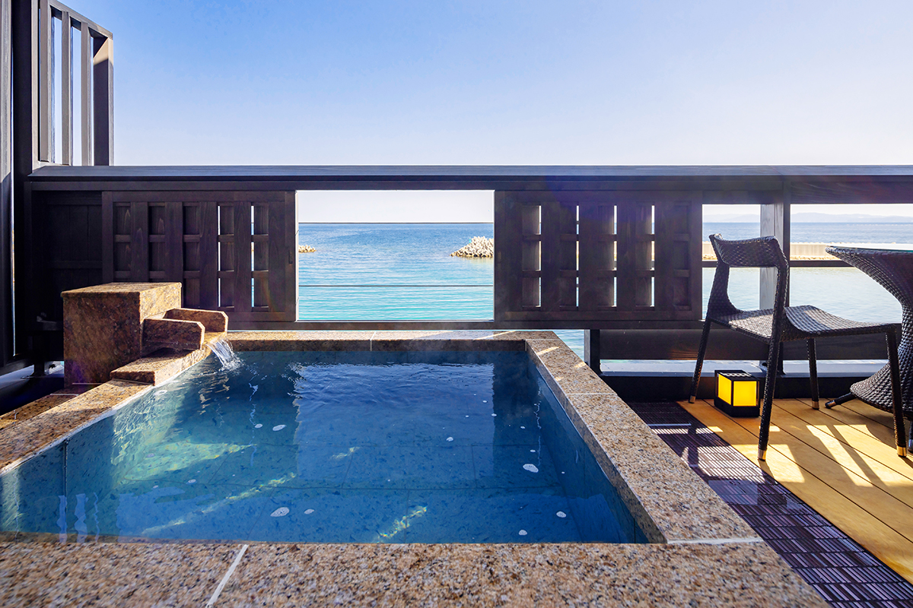
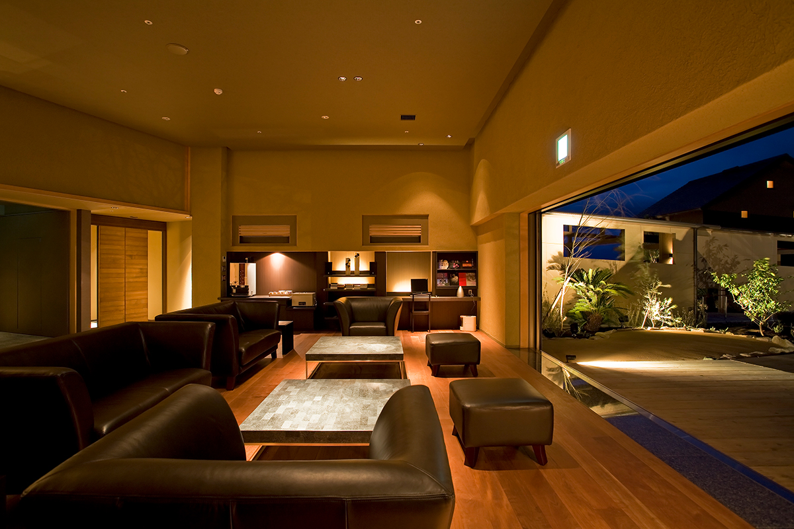
«Авадзи Мусэнкэй» и «Мусэнкэй Бэссо Амахара»
- Адрес
- префектура Хёго, Сумото, Оросидани, 1052-2
- Телефон
- +81 570-07-9922
- Цены / Вход
- «Авадзи Мусэнкэй» от 23 100 иен, «Амахара» от 33 000 иен, за ночь с ужином и завтраком, без налога на онсэн
Западный берег
«Авадзи Хама-рикю»: закаты над сосновой рощей
На западном берегу острова тянется Кэйно-мацубара, сосновая роща из чёрных сосен Авадзи, которая охраняется государством как живописное место. Солнце садится здесь во Внутреннее Японское море, и местный закат включён в список «100 лучших закатов Японии». С открытой террасы отеля можно спуститься прямо к воде, а вдоль берега проложена тропа для прогулок.
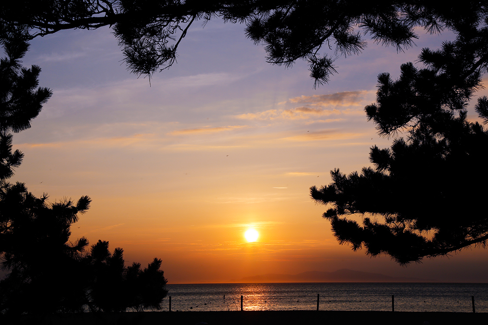
«Авадзи Хама-рикю» это классический курорт в японско-современном стиле прямо у рощи. Входной зал с высоким потолком напоминает европейский особняк конца XIX и начала XX века, а в лаунже за ним днём и вечером бесплатно наливают напитки. Ужин готовят из того, что дают море и земля Авадзи, а вода в онсэне мягкая и чуть тягучая.
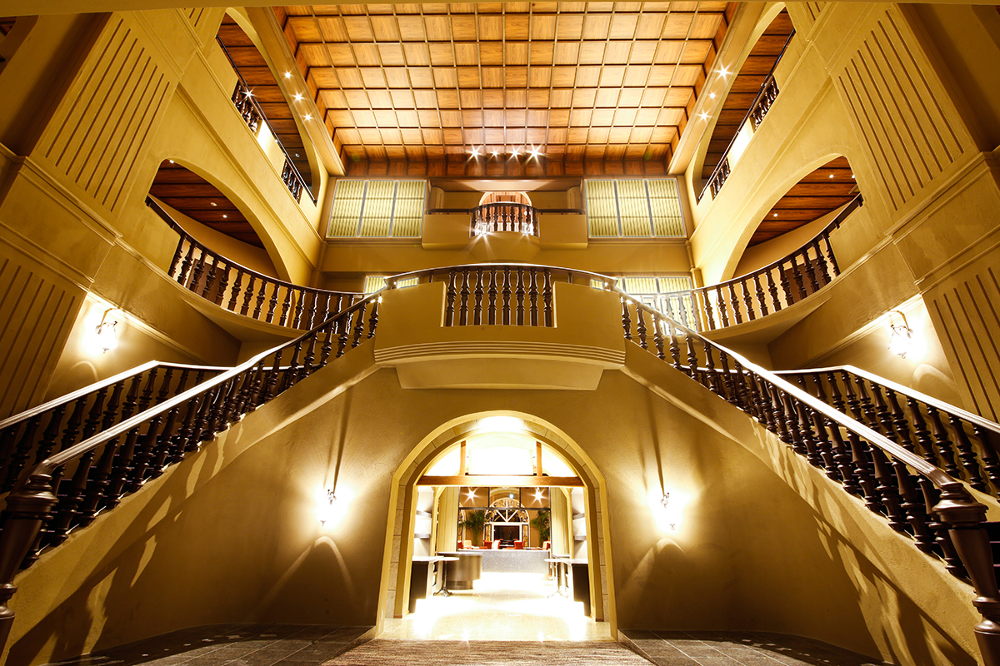
Из номеров с собственной купальней море видно и из воды, и из комнаты.
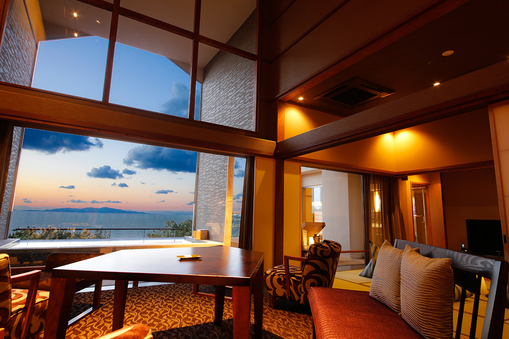
По соседству стоит «Хама-рикю Бэссо Такуми», небольшой роскошный отель, где у каждого номера своя купальня с водой онсэна. Кухня здесь вдохновлена испанским Сан-Себастьяном: по словам создателей, климат, рельеф и продукты там похожи на Авадзи.
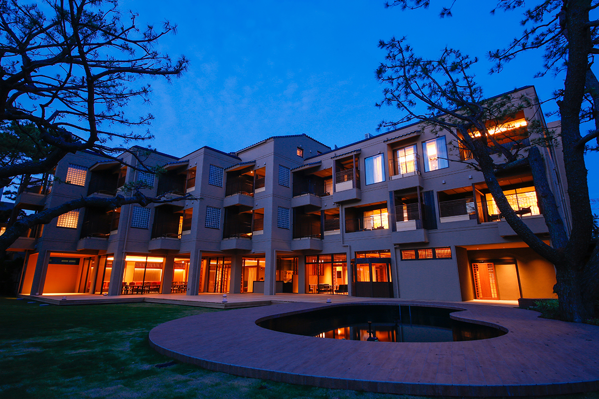
«Авадзи Хама-рикю»
- Адрес
- префектура Хёго, Минамиавадзи, Мацухо-Кодзуро, 970-81
- Телефон
- +81 570-07-9922
- Цены / Вход
- от 22 000 иен за ночь с ужином и завтраком, без налога на онсэн
«Хама-рикю Бэссо Такуми»
- Адрес
- префектура Хёго, Минамиавадзи, Мацухо-Кодзуро, 970-6
- Телефон
- +81 570-07-9922
- Цены / Вход
- от 29 700 иен за ночь с ужином и завтраком, без налога на онсэн